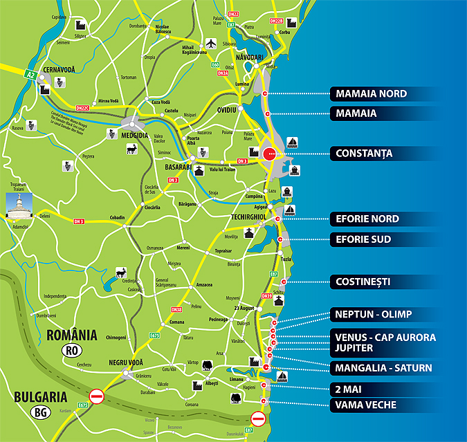

Eforie Sud este o localitate a litoralului românesc, în judeţul Constanţa, Dobrogea, România, parte şi centru administrativ al oraşului Eforie. înainte de Al Doilea Război Mondial localitatea s-a numit Carmen Sylva (pseudonimul literar al reginei Elisabeta, 1843-1916). între 1950-1962, localitatea a purtat numele "eroului" ceferist Vasile Roaită. Abia în 1962, în cadrul marii operaţiuni de destalinizare la nivel simbolic, localitatea a primit numele Eforie Sud.

Istorie
Localitatea Eforie Sud a fost înfiinţată de Ioan Movilă, un boier din părţile Moldovei, la 1899, atunci când s-a pus piatra de temelie a hotelului Movilă.La început staţiunea a purtat numele de Băile Techirghiol-Movilă, mai apoi Băile Movilă sau Techirghiol-Movilă.
Potrivit inserţiunii din publicaţia turistică „Carmen Sylva”, Ioan Movilă poate fi considerat cu toată certitudinea că este fondatorul staţiunii Eforie Sud, al cărei act de naştere este semnat în ultimul an al secolului 19. Ioan Movilă a fost un moşier cu idei înaintate, formate cu ocazia studiilor făcute în Apusul Europei, care a cunoscut staţiunile balneare din Europa, apreciind valoarea terapeutică a nămolului lacului Techirghiol şi a razelor solare marine, valoare confirmată de către oamenii din aceste locuri, de legendele locale, de rezultatele obţinute de medicii militari care tratau aici pe militarii suferinzi din Divizia Dobrogeană încă din 1894. El a luat hotărârea de a întemeia pe moşia cumpărată, o staţiune balneară între plaja mării şi lac, în 1899.
Cu fonduri din exploatarea moşiei sale şi cu împrumuturi făcute la băncile vremii, Movilă iniţiază aducerea unor medici şi chimişti din Viena pentru analiza apei şi a nămolului apoi începe construcţia celor două hoteluri - azi Hotel Parc şi un sanatoriu pentru băi calde de nămol cu 50 de cabine. Planurile de construcţie sunt făcute şi conduse de arhitectul Ivanovici şi inginerul Zissu, iar pentru construcţie au fost aduşi meşteri zidari cu familiile, cum au fost familia Panait şi Cristu, cărora le şi construieşte locuinţe provizorii. în primăvara anului 1902, construcţiile au fost terminate, iar Movilă a întreprins o amplă acţiune de reclamă în ţară şi peste hotare pentru a atrage vizitatori.
Băile şi hotelurile au fost deschise în perioada 15 iulie-15 august 1902. Apoi Ioan Movilă a mai luat hotărârea de a parcela şi moşia dintre ape, în locuri de casă, pe care să le vândă cu scopul de a se clădi aici şi alte vile şi hoteluri pentru turişti.
La 15 ianuarie 1904 Ioan Movilă moare, dar familia condusă de Elena Movila continuă vânzarea locurilor de casă pe care se construiesc noi vile şi hoteluri începând din anul 1905.
În perioada 1903-1906 se construiesc aproximativ 50 de vile şi hoteluri ca: vila Colonel Negrea, vila Cleopatra (azi Cupidon), vilele Sachelarie, Călinescu, Smântânescu, Predescu, Flora, hotelul Popovici si vila Ing. Zissu construită alături de hotel Parc, vilă care a fost reparată şi refăcută în 1967. Tot în această perioadă, se construiesc şi anexele comerciale ale centrului, clădiri care astăzi sunt locuinţe.
În 1909, Eforia Spitalelor Civile din Bucureşti, înfiinţează pe malul mării, Sanatoriul pentru combaterea tuberculozei osoase la copii, construit provizoriu, cu instalaţii de băi calde, aplicaţii de câtaplasme şi helioterapie. Până în 1916, ia fiinţă în jur, un parc cu flora montată, cu scop recreativ dar şi pentru consolidarea terenului nisipos.
În anul 1925, Eforia Spitalelor Civile din Bucureşti a adus aici pe doctorul Victor Climescu, care după cel de-al doilea război mondial înfăptuieşte aici a adevărată şcoală românească de chirurgie osteo-articulară pentru combaterea tuberculozei osoase. Peste 50.000 de suferinzi au trecut prin acest sanatoriu până în anul 1968.
Staţiunea Eforie Sud nu a avut străzi până în 1920, deşi ea fusese construită, la început, pe baza unui plan de sistematizare întocmit în 1906 de către arhitectul Arta Florescu, membru al familiei Movilă. Spre vile se mergea pe alei şi poteci, care plecau din şoseaua centrala Constanţa-Mangalia. Prin 1920, un om de iniţiativă - Constantinescu (i se spunea Căpitanul) a organizat transportul cu pontonul pe lacul Techirghiol. Pontonul era de fapt o plută mare, fixată pe nişte bacuri, şi mişcată de un motor cu ardere internă, ce făcea 20 de minute de la Techirghiol la Movilă (azi, Eforie Sud), depunându-şi pasagerii pe malul unde Ioan Movilă ridicase sanatoriul pentru băi calde şi nămol şi hotelul menţionat.
În septembrie 1916, populaţia din Movilă este evacuată din staţiunea. Hotelurile, vilele şi băile rămân la dispoziţia armatei germano-bulgare. Construcţiile au stagnat, urmând să fie reluate după 1919.
Încă din 1919, se pun bazele societăţii anonime Techirghiol- Movilă cu scopul de a se vinde locuri de casă formate pe moşia Movilă parcelată, acţiune desfăşurată acum sub conducerea lui Sever Movilă, a Artei Florescu şi a altor membri ai familiei. Acum se iniţiază un nou plan de sistematizare cu locuri de casă între 600 m2 şi 1000 m2, iar perimetrul construibil a fost zonal după felul construcţiilor, în zona hoteluri, zona vile, zona obiective comerciale, precum şi zona industrială, drumuri, străzi şi alei.
Încă în 1938, se construiesc în staţiune după acest plan aproximativ 500 vile, hoteluri şi case de locuit. Staţiunea ajunge astfel să poată găzdui în 1938 până la 20.000 vizitatori pe sezon. Profesorii Mrazec şi Marius Sturza, apreciind dezvoltarea staţiunii între 1930-1939, precizau într-o prezentare propagandistică că: „Staţiunea balneară "Carmen Sylva" este una dintre cele mai mari staţiuni din ţară. Nu există în Europa o staţiune balneară care într-un timp atât de scurt să fi luat un avânt atât de impunător”.
Societatea Movilă construieşte clădirea actualelor hale, iniţial cu scopul de a servi ca garaje, magazii şi locuinţei la etaj (între 1930-1939). După 1939 s-a construit Cazinoul de azi. în 1927 se termină linia de cale ferată şi gara, toate asigurate prin munca ieftină a ostaşilor din armata căilor ferate, condusă de general Ionescu din cavaleria regală. Spre sfârşitul perioadei 1920-1935, s-a construit biserica locală şi şcoala, din iniţiativa locuitorilor stabili, cu ajutorul familiei Movila, care donează prin societare loturile şi contribuie cu materiale şi bani.
Conducerea administrativă a fost îndeplinită în perioada 1918-1927 de către Primăria satului Tuzla. în 1928 staţiunea Movilă a devenit comună rurală, iar în 1929 comună urbană şi i se schimbă numele în Carmen Sylva. Din 1948, staţiunea s-a numit Vasile Roaită, iar din 1962 numele i s-a schimbat în Eforie Sud.Apa potabilă a rămas o problemă grea pentru localnici, fiind adusă cu sacaua de la Tuzla sau Cainaci. în 1955 se începe canalizarea oraşului. Iluminatul electric a pornit cu o mică şi costisitoare uzină electrică în 1930, apoi în 1933 a fost construită linia electrică aeriană Constanţa-Carmen Sylva, prin care s-a adus curentul electric de la Constanţa.
Economie
Principala activitate economică a oraşului o reprezintă turismul, desfăşurat în special pe durata sezonului estival. Tot aici se găseşte o fabrică de mobilă (Ovo Design).
Cultură
Cultura este reprezentată în primul rând prin Liceul "Carmen Sylva". Acesta este printre cele mai bine dotate licee din judeţul Constanţa. De asemenea aici există şi o Casă de Cultură, ce include o bibliotecă.
Sport
Tot în Eforie Sud se află şi echipa de fotbal a oraşului, numită CS Eforie. Stadionul echipei se află de asemenea tot în Eforie Sud.